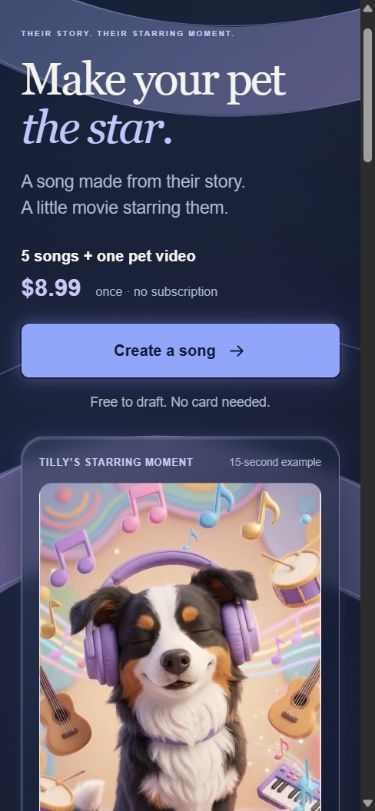

Generation that can continue.
Persisted jobs track work beyond the browser session. Recovery checks accepted provider operations before considering another submission, reducing the risk of duplicate generation costs.
Live product · Independent project · 2026
From a pet’s story
to songs & video.
A personal story becomes editable lyrics, a chosen sound, and a song to keep. A favorite pet photo becomes a short music video. I brought those moments together in a live application, from the first idea through delivery.

01 / The experience
A guided creative flow that gives people room to shape the result, then makes it easy to listen, download, and share.
The video shows an animated version of Tilly wearing purple headphones in a colorful musical setting. It demonstrates the image-to-video result; the steps at right describe the creation flow.
Capture a nickname, a favorite memory, or a pet’s little quirks. Review and edit the lyrics.
Choose a genre and preferred instruments before generating a recording.
Approve a styled image preview before the app creates the short video.
Return to the saved recording, play it, download the media, and share deliberately.
02 / Engineering decisions
Generating a result is one part of the product. Accounting for credits, long-running jobs, and delivery makes the experience usable.
Persisted jobs track work beyond the browser session. Recovery checks accepted provider operations before considering another submission, reducing the risk of duplicate generation costs.
Verified payment events connect checkout to entitlements. Separate handling for paid packs and promotional gifts keeps account balances and fulfillment understandable.
Customer media uses private storage and authenticated access. Short-lived download links and explicit sharing keep delivery separate from automatic public exposure.
Server-side integrations keep provider credentials out of the interface. Music, image, and video services support one customer flow while provider choices can evolve behind it.
03 / Technical foundation
A responsive interface, a Python service layer, and managed services for identity, payments, generation, and delivery.
The application coordinates these services:
Deployed on Vercel, with operational checks through GitHub Actions. This view shows responsibilities and omits credentials, customer records, and internal account details.
04 / Delivery & learning
I led the product direction, interface decisions, provider evaluation, and launch. Through an AI-assisted development workflow, I translated feedback into changes across genres, instrument choices, sharing, and the song-and-video experience.
The project connected my customer-facing business experience with practical software delivery: deciding what the customer needs, testing the complete flow, and refining what happens when a service takes time or fails.
Current stage: live launch and continued iteration. This case study presents the delivered product and engineering work; commercial validation is ongoing.
Built with purpose.
Made to mean something.